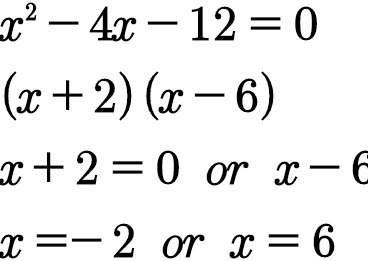
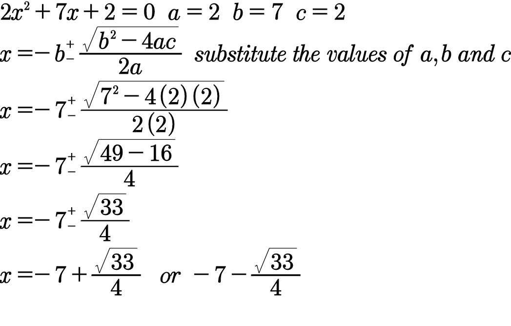
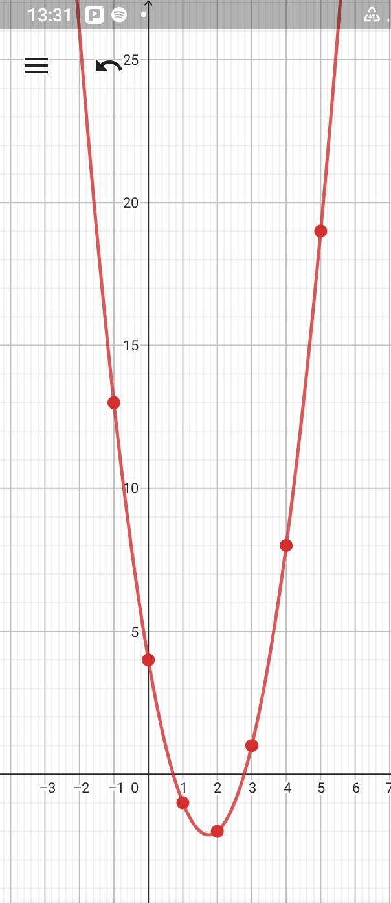
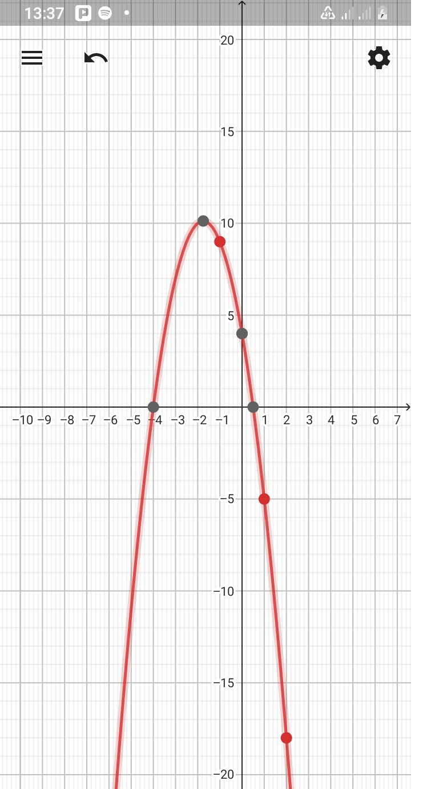

MATHETICS WEBSITES
Mathematics is a really an interesting subject but seemingly student find it to be the hardest subject.
Student lack the know how of dealing with mathematical problems.
This has come to my attention which is why i decided to create this site to help students with problems in mathematics.
I will focus on these key topics
*QUADRATICS
*FUNCTIONS
*COORDINATE GEOMETRY
*CIRCLE GEOMETRY
*DIFFERENTIATION
*TRIGONOMETRY
*STATISTICS
QUADRATICS
A quadratic is a function with 2 as the highest degree. For example 2x2+4x=9.
There are four ways of solving quadratic equations which are:
graphical method which we will not look at in this edition
completing the square
quadratic formula
FACTORISATION
We will start with factorising quadratics in the form x2bx+c=0 where a=1
EXAMPLE
x2+17x+16=0
(x+1)(x+16)=0 this is archived by looking for factors of 16 that add up to 17. In this case its 1 and 16
x+1=0 or x+16=0 solve for x to get
x=-1 or x=-16
Another example

images/1669625893065[1].png
x2-4x-12=0
(x+2)(x-6)=0
x+2=0 or x-6=0
x=-2 or x=6
Exercise 1
a) y2 - y +3=0
b) t2 - 4t =60
c) x2+ 11x + 24=0
FACROTISING QUADRATICS IN THE FORM ax2+bx+c=0
EXAMPLE
a) 5x2 + 13x - 6 =0 multiply 5 by -6 to get-30
look for factors ot -30 that add up to 13 which are 15 and -2 then split the middle term
5x2 + 15x -2x - 6 =0 group the equation
(5x2 + 15x)(-2x -6)=0 factor out
5x(x+3)-2(x+3)=0 the terms inside the brackets must be the same if correctly done
(5x-2)(x+3)=0 solve for x
5x-2=0 or x+3=0
x=2/5 or x=-3
b) 6x2 +5=17x take 17x to the left hand side
6x2 -17x +5 =0
(2x-5)(3x-1)=0
2x-5=0 or 3x-1=0
x=5/2 or x=1/3
c)9x2-39x-30=0 divide every term by 3
3x2-13x-10=0 factorise
(3x+2)(x-5)=0
3x+2=0 or x-5=0
x=-2/3 or x=5
EXERCISE 2
a)5x2+19x+12=0
b)x(10x-13)=3
c)8x2=4-4x
SOLVING USING QUADRATIC FORMULA
When solving quadratics using the quadratic is one of the simplest method. it can be used to solve any quadratic.The for formula is
.jpg)
quadratic formula
a= the co-efficient of x2
b=
the co-efficient of x
c= the y intercept
EXAMPLE
a)2x2+7x+2=0 a=2 b=7 c=2

solution click here
EXERCISE 3
a) 5x2+7x-2=0
b) 4x2+7x+2=0
c) x2+6x+4=0
SOLVING USING THE GRAPHICAL METHOD
When solving using graphical method you need to first know whether the graph is a minimum or maximum
minimum have a positive co- efficient of x2 then maximum has a negetive co-efficient of x2
example
minimum x2+3x+4
maximim -x2+x+2
minimum faces upwards then maximum faces downwards
Example
2x2-7x+4=0
first make table of values in the calculator or notebook
* we will focus on range where
-1<x<5
| x |
2x2-7x+4=0 |
| -1 |
13 |
| 0 |
4 |
| 1 |
-1 |
| 2 |
-2 |
| 3 |
1 |
| 4 |
8 |

The solution of this is where the graph cuts the x-axis
click here minimum
maximum example
| x |
-2x2-7x+4=0 |
| -1 |
13 |
| 0 |
4 |
| 1 |
-1 |

click here maximum
EXERCISE 4
a) 2x2+5x+3=0
b) 2+x-3x2=0
c)3x2+5x-1=0
COMPLETING THE SQUARE
This is to express a quadratic expression in the form (ax+b)2+c
Completing the sqaure helps us to find the vertex (-b,c)from the epression (ax+b)2+c
For eample
(x+2)2+3 the verte is (-2,3)
Now lets make completing the square a walk in a park.
e.g. x2-x-6
*open double brackets ( ) ( )
*sqaure both brackets ( )3 ( )2
*put minus sign between the brackets ( )3 -( )2
*divide the middle term by 2 in this case we will divide -1 by 2 to give -1/2
* put the negetive half in both brackets and return the constant (x-1/2)3 -(-1/2)2-6
*open the braket ecept the one with (ax+b)2 (x-1/2)2-1/4 -6
*collect like terms (x-1/2)2-25/4
IF you are to solve the quadratic equation using completing the square
*equate the last step to zero (x-1/2)2-25/4 =0
* take the constant to the other side (x-1/2)2=25/4
* take a square root both sides
* solve for x

solution picture
EXERCISE 5
question1
complete the sqaure leaving your answer in the form (x+b)2+c
a) x2-4x-8
b) x2+7x+1
question 2
a) x2+4x-7=0
b) x2-10+2=0
![images/1669625893065[1].png](images/1669625893065[1].png){kind=link}